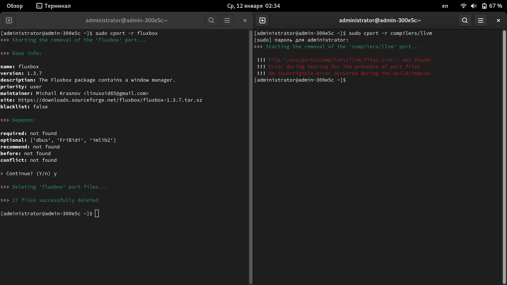

Введение в порты⚓︎
Порты - относительно молодой (в CalmiraLinux), но, в тоже время, очень удобный инструмент управления ПО. На данный момент, с помощью портов можно только устанавливать и удалять ПО, но в скором времени будут доступны новые функции.
Введение⚓︎
Система портов находится в /usr/ports. Всё программное обеспечение разделено на категории.
В каждой категории несколько подкаталогов с портом программы. Порт представляет из себя несколько файлов:
install- файл с инструкциями по сборке порта;port_configuration.sh- дополнительные параметры порта (опционально);files.list- список файлов, которые устанавливает порт (опционально);config.json- информация о порте (имя, версия, описание, сборщик, пр.);resources.conf- информация для пакетного менеджераcport(ссылка для скачивания, архив для распаковки);
Управление программным обеспечением из системы портов⚓︎
Для управления программным обеспечением (установка, удаление, просмотр информации) используется пакетный менеджер cport (Calmira Ports). На данный момент он в состоянии альфа-тестирования, но уже неплохо подходит для управления ПО. Из его возможностей можно отметить:
- Сборку порта;
- Удаление порта;
- Просмотр о нём информации;
- Работа с чёрным списком системы портов.
Синтаксис:
cport [-h] [--install INSTALL [INSTALL ...]] [--remove REMOVE [REMOVE ...]]
[-f FLAGS] [--info INFO] [--blacklist.add ADD_BLACKLIST]
[--blacklist.remove REMOVE_BLACKLIST] [--blacklist.fetch FETCH_BLACKLIST] [-v]
Опции⚓︎
--install,-i- установка порта;--remove,-r- удаление порта;--info,-I- просмотр информации о порте;--blacklist.add- добавить порт в чёрный список;--blacklist.remove- удалить порт из чёрного списка;--blacklist.fetch- проверить, добавлен ли указанный порт в чёрный список;--version,-v- версия;--help,-h- краткая справка.
Установка программ из портов⚓︎
Для того, чтобы установить порт, используется опция --install:
cport --install base/editors/vim
Данная команда установит Vim, который находится в категории base/editors.
cport -i general/llvm
>>> Starting building a port 'compilers/llvm'...
>>> Base info:
name: llvm
version: 13.0.0
description: The LLVM package contains a collection of modular and reusable compiler and toolchain technologies. The Low Level Virtual Machine (LLVM) Core libraries provide a modern source and target-independent optimizer, along with code generation support for many popular CPUs (as well as some less common ones!). These libraries are built around a well specified code representation known as the LLVM intermediate representation ("LLVM IR").
priority: user
maintainer: Michail Linuxoid85 Krasnov <linuxoid85@gmail.com>
site: https://github.com/llvm/llvm-project
blacklist: false
>>> Depends:
required: ['compilers/cmake']
optional: not found
recommend: not found
before: not found
conflict: not found
> Continue? (Y/n)
Удаление порта⚓︎
Для удаления порта используется ключ --remove.
Обратите внимание!
Удаление будет работать только в том случае, если в порте присутствует файл files.list (см. следующий пункт)!

Рис.1: Сравните два окна. В левом удаляется установленный порт fluxbox, у которого есть файл files.list. В таком случае удаление возможно. В правом окне удаляется порт compilers/llvm, у которого данного файла нет, поэтому вызвана следующая ошибка:
!!! File '/usr/ports/compilers/llvm/files.list': not found!
!!! Error during testing for the presence of port files
!!! An incorrigible error occurred during the build/remove!
cport --remove base/editors/vim
Конфигурация порта⚓︎
Все сведения и параметры порта находятся в файле config.json. Его примерное содержимое здесь:
{
"name": "имя порта *",
"version": "версия порта *",
"description": "описание порта *",
"site": "ссылка на домашнюю страницу/репозиторий программы порта",
"maintainer": "сопровождающий порт *",
"priority": "приоритет порта *",
"release": "релиз Calmira, для которого предназначен порт",
"deps": {
"required": [
"необходимые зависимости"
],
"runtime": [
"необходимые зависимотси в рантайме"
],
"optional": [
"опциональные зависимости"
],
"recommend": [
"рекомендуемые зависимости"
],
"before": [
"порт должен быть установлен перед этими зависимостями"
],
"conflict": [
"конфликтующие с этим портом зависимости"
]
},
"bins": [
"список установленных программ (бинарных файлов) в /bin, /sbin, /usr{,/local}/bin, /usr{,/local}/sbin"
],
"libs": [
"список установленных библиотек"
],
"dirs": [
"список установленных директорий"
]
}
Все значения, указанные знаком * являются обязательными. Остальные вы используете по мере необходимости.
Подробное объяснение параметров в таблице ниже.
| Параметр | Объяснение | Приоритет |
|---|---|---|
name |
Имя пакета. Важно не путать имена пакета и порта. Например, имя пакета - vim, а имя порта - /base/editors/vim |
Необходимый |
version |
Версия пакета | Необходимый |
description |
Описание пакета (для чего он предназначен). Только на английском или русском языках. | Необходимый |
site |
Домашняя страница/страница с опсианием программы/ссылка на репозиторий с исходным кодом программы | Опциональный |
maintainer |
Имя/псевдоним, а так же почта сопровождающего порта | Необходимый |
priority |
Приоритет порта - пользовательский или системный | Необходимый |
release |
Порт подготовлен только для определённого релиза дистрибутива CalmiraLinux, на других работа будет некорректной. Номер релиза системы берётся из параметра DISTRIB_RELEASE файла /etc/lsb-release. |
Опциональный |
deps |
В этой секции описываются зависимости порта (см. пункт "Зависимости поля deps") |
Опциональный |
bins |
Установленные программы в /{bin,sbin} и /usr/{bin,sbin} |
Опциональный |
libs |
Установленные библиотеки | Опциональный |
dirs |
Установленные директории | Опциональный |
Обратите внимание
Если у параметра установлен необходимый приоритет, то этот параметр обязательно должен присутствовать в config.json. Опциональные параметры выбираются, если сопровождающий считает нужным, а так же по мере наличия нужной информации для заполнения значений этих параметров.
Зависимости поля deps⚓︎
Примерное содержимое поля deps:
"deps": {
"required": [
"необходимые зависимости"
],
"runtime": [
"необходимые зависимотси в рантайме"
],
"optional": [
"опциональные зависимости"
],
"recommend": [
"рекомендуемые зависимости"
],
"before": [
"порт должен быть установлен перед этими зависимостями"
],
"conflict": [
"конфликтующие с этим портом зависимости"
]
},
Параметры:
| Параметр | Объяснение |
|---|---|
required |
Необходимые зависимости, без которых порт не может быть собран и установлен. Перед сборкой данного порта, соберите его необходимые зависимости из этого параметра. |
runtime |
Необходимые зависимости во время работы компонентов пакета |
optional |
Опциональные зависимости. Не обязательны к сборке и установке. Обычно расширяют функционал искомого порта. |
recommend |
Рекомендуемые зависимости. Так же не обязательны к сборке и установке, но без них пакет порта может работать нестабильно/некорректно, либо не будут доступны определённые функции и возможности |
before |
Необязательные зависимости. Тоже самое, что optional и recommend, но разница в том, что опциональные и рекомендуемые зависимости могут быть установлены после сборки искомого порта, а before - либо установлены до искомого порта, либо не установлены вообще. |
conflict |
Эти порты конфликтуют с искомым. Возможно они/искомый порт затирают файлы друг друга, либо вызывают всевозможные несовместимости и регрессии. Настоятельно советуется удалить те порты, которые установлены в системе и перечислены в этой секции во избежание ошибок |